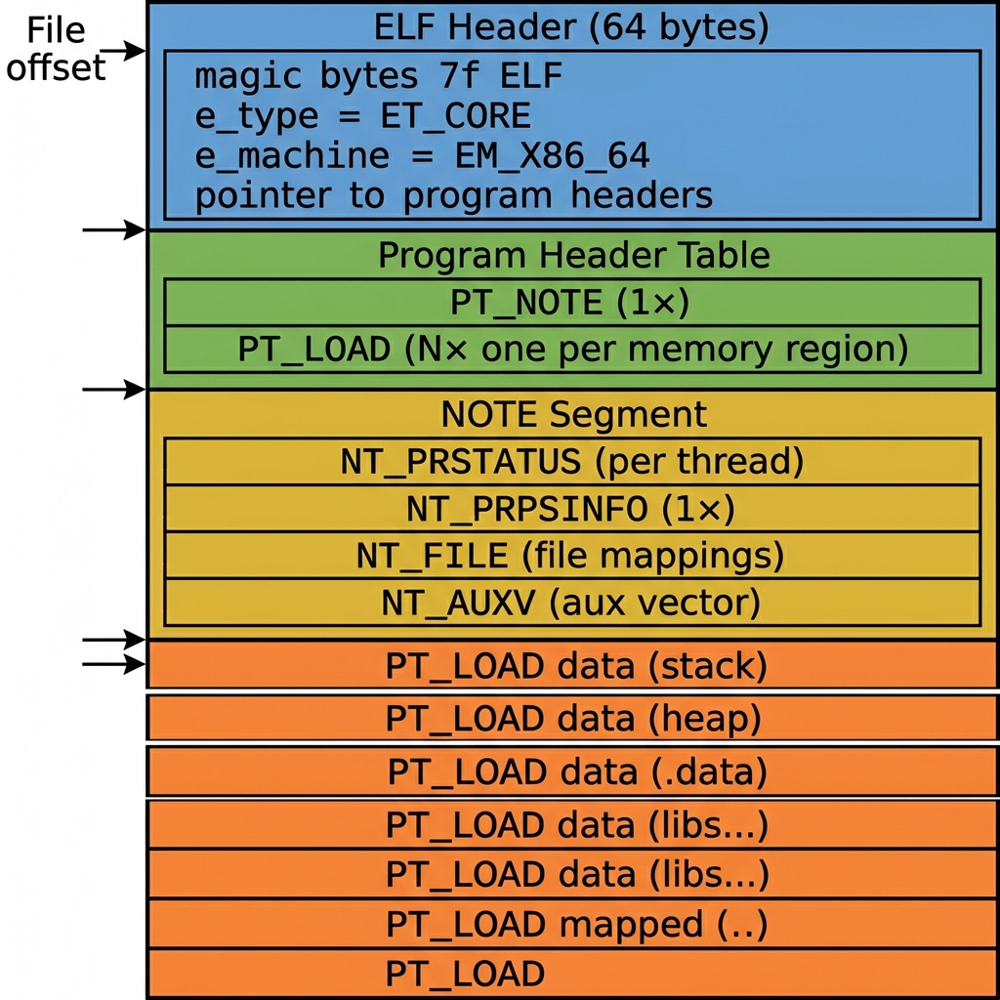
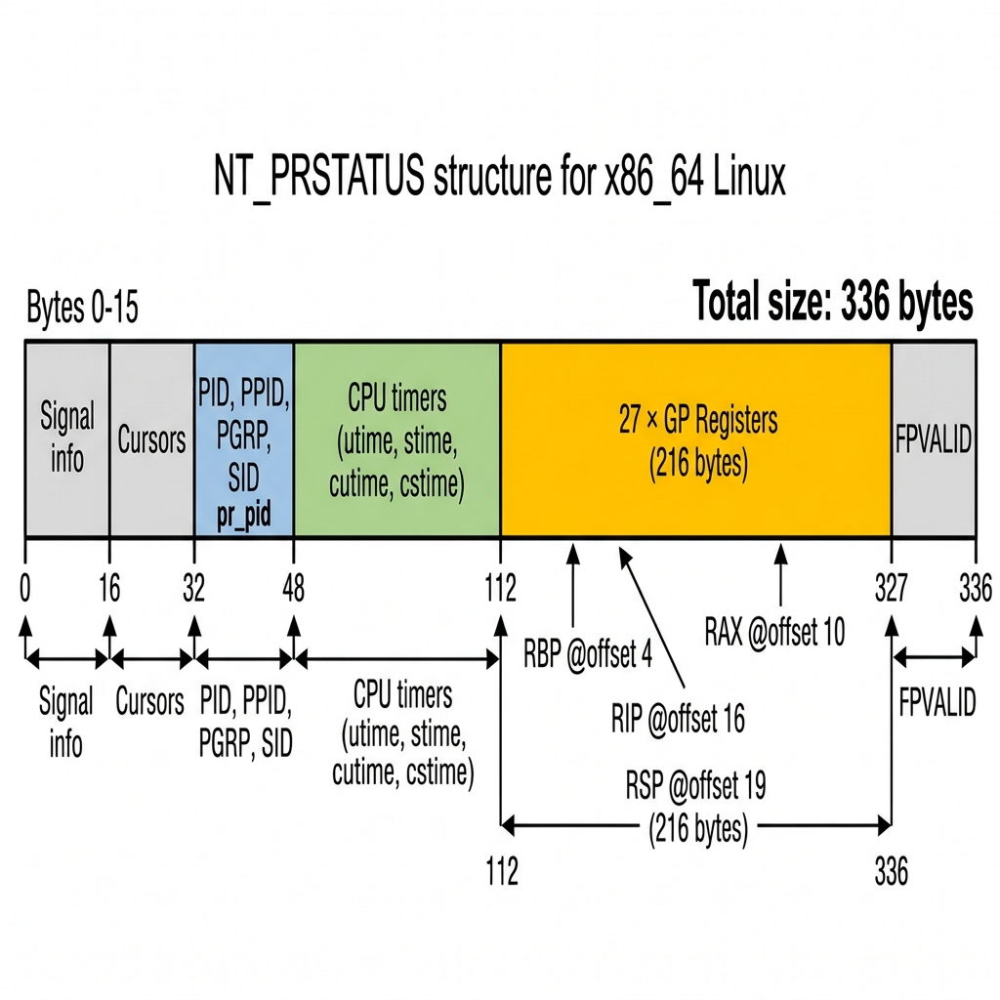

In Part 1, we learned that D-state processes are untouchable by debuggers because ptrace can't deliver signals to them. But we discovered a backdoor: /proc/<pid>/ still works, giving us access to memory maps, registers, and raw memory.
Now we need to take that raw data and package it into something GDB understands. That something is an ELF core dump.
If you've ever seen a core file after a segfault, you've seen one. But what's actually inside it? And which parts does GDB really need to produce a backtrace? Let's find out — byte by byte.
What Is a Core Dump, Really?
A core dump is an ELF file — the exact same binary format used for executables (/usr/bin/ls) and shared libraries (libc.so). The only difference is a single field in the header that says "I'm not a program you can run — I'm a snapshot of a program that was running."
It contains three things:
- CPU registers — what each thread was doing at the moment of capture
- Memory contents — stack, heap, loaded libraries, everything
- Metadata — process ID, command line, file mappings, auxiliary info
Think of it as a crime scene photograph. The process is frozen in time, and GDB is the detective examining the evidence.
The Big Picture
Here's what an ELF core dump looks like at a high level:

Let's walk through each section.
The ELF Header — "Hello, I'm a Core Dump"
Every ELF file starts with a 64-byte header. It's the file's ID card:
Elf64_Ehdr ehdr;
// Magic bytes: 0x7f 'E' 'L' 'F' — identifies this as an ELF file
memcpy(ehdr.e_ident, ELFMAG, SELFMAG);
ehdr.e_ident[EI_CLASS] = ELFCLASS64; // 64-bit
ehdr.e_ident[EI_DATA] = ELFDATA2LSB; // Little-endian
ehdr.e_ident[EI_OSABI] = ELFOSABI_LINUX; // Linux
ehdr.e_type = ET_CORE; // ← THIS is what makes it a core dump
ehdr.e_machine = EM_X86_64; // Architecture
ehdr.e_phoff = 64; // Program headers start right after this header
ehdr.e_phnum = 1 + N; // 1 PT_NOTE + N PT_LOAD segmentsThe critical field is e_type = ET_CORE. When GDB opens a file and sees this, it knows: "This isn't a binary to execute — this is a memory snapshot to analyze."
The e_phnum field tells GDB how many program headers follow. Each program header describes one chunk of the file — either metadata (notes) or memory content (loadable segments).
(64 bytes)"] --> B["e_type = ET_CORE"] A --> C["e_machine = EM_X86_64"] A --> D["e_phoff = 64
(program headers start here)"] A --> E["e_phnum = 1 + N"] E --> F["1 × PT_NOTE
(all metadata)"] E --> G["N × PT_LOAD
(memory regions)"]
Program Headers — The Table of Contents
Right after the ELF header comes the program header table. Each entry is a 56-byte Elf64_Phdr struct that says: "At file offset X, you'll find Y bytes of data that belonged at virtual address Z."
There are two types we care about:
PT_NOTE — "Here's the metadata"
The first program header points to the note segment — a blob containing all the structured metadata about the process:
Elf64_Phdr note_phdr;
note_phdr.p_type = PT_NOTE;
note_phdr.p_offset = note_offset; // where in the file the notes start
note_phdr.p_filesz = all_notes_sz; // total size of all notes combinedPT_LOAD — "Here's a chunk of memory"
Every other program header is a PT_LOAD that maps a memory region:
Elf64_Phdr load_phdr;
load_phdr.p_type = PT_LOAD;
load_phdr.p_offset = file_offset; // where in the core file
load_phdr.p_vaddr = 0x7f4a...; // original virtual address
load_phdr.p_filesz = region_size; // how many bytes
load_phdr.p_flags = PF_R | PF_W; // permissions: readable + writable
load_phdr.p_align = 4096; // page-alignedWhen GDB wants to examine memory at address 0x7f4a1234, it scans the PT_LOAD headers to find which one contains that address, then seeks to the corresponding file offset and reads the bytes. Simple lookup table.
The NOTE Segment — The Metadata Gold Mine
This is where the interesting stuff lives. The note segment is a sequence of ELF notes, each wrapped in a tiny header:
typedef struct {
uint32_t n_namesz; // Length of the name (always 5: "CORE\0")
uint32_t n_descsz; // Length of the descriptor (the actual data)
uint32_t n_type; // Note type (NT_PRSTATUS, NT_PRPSINFO, etc.)
} Elf64_Nhdr;
// Followed by: padded name + padded descriptorEvery note follows the same pattern: 12-byte header → "CORE\0" name (padded to 8 bytes) → descriptor data (padded to 4-byte boundary).
There are four note types that matter:
NT_PRSTATUS — Thread Status
One per thread. 336 bytes each. This is what GDB needs most.
NT_PRSTATUS contains the CPU register state for a single thread. Without this, GDB literally cannot produce a backtrace.

Here's the layout:
| Byte Range | Field | What It Contains |
|---|---|---|
| 0–15 | Signal info | What signal stopped/killed the thread |
| 32–35 | pr_pid |
Thread ID (TID) |
| 48–111 | CPU timers | utime, stime, cutime, cstime |
| 112–327 | GP Registers | 27 × 8-byte registers — the crown jewels |
| 328–335 | fpvalid |
Whether floating-point state follows |
The register block at offset 112 is the entire x86_64 user_regs_struct — 27 general-purpose registers in the exact order the kernel stores them:
// The 27 x86_64 registers in user_regs_struct order:
// Index Register Role
// 0 R15 General purpose
// 1 R14 General purpose
// 2 R13 General purpose
// 3 R12 General purpose
// 4 RBP Frame pointer ← critical for stack walking
// ...
// 10 RAX Return value / syscall number
// 12 RDX 3rd argument
// 13 RSI 2nd argument
// 14 RDI 1st argument
// 15 ORIG_RAX Original syscall number
// 16 RIP Instruction pointer ← where the thread is executing
// 17 CS Code segment selector (0x33 for userspace)
// 18 EFLAGS Processor flags
// 19 RSP Stack pointer ← top of the thread's stack
// 20 SS Stack segment selector (0x2b for userspace)GDB uses RIP to know which instruction the thread was on, RSP to find the top of the stack, and RBP to walk the frame pointer chain and reconstruct the full call stack.
In our code, filling this struct looks like:
unsigned char *prstatus = calloc(1, 336); // zero-initialized
// Set the thread ID
*(pid_t *)(prstatus + 32) = thread.tid;
// Copy all 27 registers into the register block at offset 112
memcpy(prstatus + 112, thread.regs, 27 * sizeof(unsigned long));
// Write as an ELF note
write_note(core_file, NT_PRSTATUS, prstatus, 336);Why one per thread? Because each thread has its own register state and its own call stack. In a multi-threaded program like cvmfs2, the daemon might have 30+ threads, and only some are stuck in D-state. The per-thread NT_PRSTATUS lets GDB show you: "Thread 1 is stuck in SafeRead(), Thread 2 is stuck in Signal::Wait(), Thread 3 is idle in poll()..."
NT_PRPSINFO — Process Identity (One Per Process)
136 bytes. Written once. Tells GDB what program this core came from.
unsigned char *prpsinfo = calloc(1, 136);
prpsinfo[0] = 2; // pr_state = TASK_UNINTERRUPTIBLE (D-state!)
prpsinfo[1] = 'D'; // pr_sname = 'D'
// Thread/process ID
*(pid_t *)(prpsinfo + 24) = pid;
// Program name (what shows up in GDB's "Core was generated by...")
strncpy((char *)(prpsinfo + 40), "cvmfs2", 16); // pr_fname
// Full command line
strncpy((char *)(prpsinfo + 56), "/usr/bin/cvmfs2 /cvmfs/atlas.cern.ch ...", 80);
write_note(core_file, NT_PRPSINFO, prpsinfo, 136);When you open the core in GDB, the first thing it prints is:
Core was generated by `/usr/bin/cvmfs2 /cvmfs/atlas.cern.ch fuse...'.That comes from pr_psargs at offset 56. And the pr_state = 'D' is our little calling card — it tells anyone examining this core that the process was in uninterruptible sleep when we captured it.
NT_FILE — The Library Map
Variable size. Written once. This is how GDB finds function names.
Here's something that trips people up: the core dump doesn't contain the .text (code) section of shared libraries. It can, but for a standard-mode dump, we skip those read-only regions to save space. So how does GDB know that address 0x7f4a12345678 is inside libc.so at function read()?
NT_FILE.
This note contains a mapping of virtual address ranges to filenames:
Address Range File Offset Filename
0x7f4a12340000–0x7f4a12380000 0x0 /usr/lib64/libc.so.6
0x7f4a12380000–0x7f4a12390000 0x40000 /usr/lib64/libc.so.6
0x55a8b1000000–0x55a8b1020000 0x0 /usr/bin/cvmfs2
...When GDB sees that address 0x7f4a12345678 falls in the range for /usr/lib64/libc.so.6, it opens that file from disk, reads the symbol table and DWARF debug info, and resolves the address to a function name + line number.
This is why we always include all file-backed regions in NT_FILE, even in standard dump mode where we skip dumping their actual memory contents. The memory can be reloaded from disk; the address mapping cannot.
// NT_FILE format:
// uint64_t count — number of file entries
// uint64_t page_size — 4096
// count × { uint64_t start, end, file_offset }
// count × null-terminated filename strings0x7f4a1234...–0x7f4a1238...
/usr/lib64/libc.so.6"] --> B["GDB opens
/usr/lib64/libc.so.6
from disk"] B --> C["Reads .symtab
and .eh_frame"] C --> D["Resolves:
0x7f4a12345678
= read+0x42"]
Key insight: NT_FILE is what makes standard dump mode work. We skip dumping 200MB of read-only
.textpages from shared libraries, but GDB can still resolve every symbol because NT_FILE tells it where to find the files on disk.
NT_AUXV — The Kernel's Cheat Sheet
Variable size. Written once. Contains the auxiliary vector.
The auxiliary vector (auxv) is a block of key-value pairs that the kernel passes to every process at startup. It contains system-level information like:
| Key | Value | GDB Uses It For |
|---|---|---|
AT_ENTRY |
Program entry point | Finding _start |
AT_PHDR |
Address of program headers in memory | Locating the dynamic linker |
AT_PAGESZ |
System page size (4096) | Memory alignment |
AT_SYSINFO_EHDR |
vDSO address | System call optimization info |
We don't need to parse this — we just read the raw bytes from /proc/<pid>/auxv and embed them as-is:
char *auxv_data;
size_t auxv_size;
read_auxv(pid, &auxv_data, &auxv_size); // reads /proc/pid/auxv
write_note(core_file, NT_AUXV, auxv_data, auxv_size);GDB uses this primarily to find the dynamic linker (ld-linux.so), which in turn tells it where all the shared libraries are loaded. Combined with NT_FILE, this gives GDB a complete picture of the process's address space layout.
The LOAD Segments — The Actual Memory
After the note segment comes the bulk of the core file: the actual memory contents.
Each PT_LOAD program header we wrote earlier corresponds to one memory region. Now we write the raw bytes for each region, in the same order:
for (int i = 0; i < num_regions; i++) {
if (!should_dump_region(®ions[i])) continue;
size_t region_size = regions[i].end - regions[i].start;
// Read the region page-by-page from /proc/pid/mem
for (size_t offset = 0; offset < region_size; offset += PAGE_SIZE) {
unsigned char page[4096];
ssize_t n = pread(mem_fd, page, PAGE_SIZE,
regions[i].start + offset);
if (n <= 0) {
// Guard page or unmapped — write zeros instead of aborting
memset(page, 0, PAGE_SIZE);
n = PAGE_SIZE;
}
fwrite(page, n, 1, core_file);
}
}Two important details:
Page-by-page reads: We don't try to read an entire 8MB stack region in one
pread()call. Some pages within a region might be guard pages (deliberately unmapped to catch stack overflows). Reading them returnsEIO. By reading one page at a time, we isolate failures and zero-fill just the bad pages.Zero-filling: If a page read fails, we write 4096 zero bytes instead. This keeps the file offsets consistent — every PT_LOAD header says "region X is at file offset Y with size Z," and those offsets must be exact. Skipping bytes would corrupt the entire file.
The Offset Arithmetic — Getting It Right
The trickiest part of writing a core dump isn't any individual piece — it's making all the offsets consistent. Every program header contains file offsets that must point to exactly the right byte in the output file.
Here's the calculation:
File offset 0: ELF header (64 bytes)
File offset 64: Program header table
= (1 + loadable_regions) × 56 bytes
File offset X: NOTE segment starts
= 64 + phdr_table_size
File offset Y: First LOAD segment starts
= X + total_notes_size
File offset Y+size[0]: Second LOAD segment starts
...(each offset = running total)"] G --> H["8. Write notes at note_offset"] H --> I["9. Write memory at data_offset"] style A fill:#e8f4fd style I fill:#e8f4fd
Everything must be calculated before writing anything, because the ELF header and program headers reference offsets that come later in the file. This is why build_core() does a two-pass approach:
- First pass: count regions, calculate sizes, compute all offsets
- Second pass: write everything in order
Putting It All Together
Let's zoom out. Here's the complete pipeline from a D-state process to a GDB backtrace:
The core file is just a container format — a way to organize /proc data into something GDB already knows how to read. We're not inventing anything new; we're just filling in the same structs that the kernel would normally fill if it could dump core the normal way.
In Part 3, we'll dive into the trickiest part: how we actually extract the data from /proc, especially the heuristic RBP recovery that turns a one-frame backtrace into a full call stack.